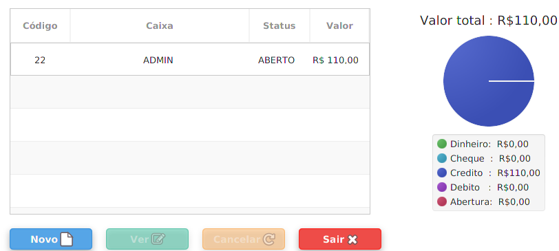

Introdução
O sistema RC,é iniciado com uma tela de Login, que por padrão, já há um usuário cadastrado com o login(ADMIN) e senha(ADMIN).
O sistema está divido em quatro segmentações sendo elas cadastros, vendas, financeiro e relatórios.
O sistema RC,é iniciado com uma tela de Login, que por padrão, já há um usuário cadastrado com o login(ADMIN) e senha(ADMIN).
O sistema está divido em quatro segmentações sendo elas cadastros, vendas, financeiro e relatórios.
Cadastros são funcionalidades do sistema, que realizam o cadastramento básico de dados, alterações, exclusão e busca dos mesmos. Sendo divididos nos grupos de (categoria, cliente, cidade, estado, empresa, fornecedor,produto, tipo de venda e usuário). Os cadastros terão por padrão um botão novo que permite a inserção de um novo cadastro, botão gravar que permite a gravação e alteração de um dado existente ou novo, exclusão permite que um dado seja deletado, caso ele não esteja sendo usado, busca que é possível pesquisar e trazer um novo dado para alteração ou exclusão, sendo possível cancelar e por último o botão sair que fecha a janela.
O botão de busca estará sempre ao lado do código do cadastro.
Categoria
Categoria pertence ao grupo de produtos,sendo utilizado para o cadastro de um produto.
Cliente
O cadastro de clientes, é possível para dois tipos, sendo eles do tipo (pessoa física, pessoa jurídica). O CPF e CNPJ de ambos tipos de clientes, tem que ser válidos e não podem conter dois números iguais. Clientes só podem ser excluídos, caso não tenham efetuado nenhuma compra.
Cidade
Cadastro de cidades, são necessários para operações de outros cadastros, sendo necessário ter um estado cadastrado previamente.
Estado
O cadastro de estados são necessários para, o cadastramento de cidades.
Empresa
O cadastro da empresa, e necessário para a parametrização dos sistema, e para a emissão de relatórios com a autoria da mesma.
Fornecedor
O cadastro de fornecedores, são necessários para o cadastro de produtos, para lançamento de contas a pagar , caso hajam um fornecedor.
Produto
Produtos são necessários para efetuação de vendas, compras e estoque, os produtos têm dois campos que tem que ser evidenciados o preço de compra e o valor de venda, valor de compra estará sempre em vinculo, quando há uma realização de uma compra mostrando somente o valor de compra, o mesmo vale para à venda, porém, com o valor de venda. Os produtos podem possuir o mesmo nome.
Tipo de venda
Tipo de venda, é necessário para a realização de uma venda, ou seja o cadastro de uma nomenclatura, para separação das vendas.
Usuário
Usuário por padrão, já contém um usuário previamente cadastrado do tipo ADMIN, podendo ser alterado o nome, senha e login, porém não é possível alterar o tipo de usuário, caso só possua um usuário do tipo admin, o mesmo vale para excluir. Usuários do tipo admin tem permissão total no sistema, já usuários do tipo normal só podem realizar vendas, inclusão de cidades, estados e clientes.
Vendas são funcionalidades que realizam as operações necessárias para realizar uma venda sendo eles as funções caixa que contém um agrupamento de funções dentro sendo elas:(Abrir caixa, Fechar caixa). Venda que também contém um agrupamento de funções sendo elas:(Iniciar, Venda, Cancelar Venda, Salvar Venda e Fechar Venda).
Caixa
Caixa são necessários para a realização de uma venda, para realizar os movimentos de caixa, e controle do que está sendo vendido. Caixa contém um gráfico do tipo pizza, mostrando a quantidade de recebimentos em dinheiro, cheque, credito, debito, valor de abertura e o valor total de todos os caixas abertos.
Para abrir um novo caixa é necessário pressionar o botão novo, assim uma tela de confirmação de login aparecera, sendo necessário que um usuário do tipo admin digite seu login e senha, para realizar uma abertura de caixa, sendo necessário realizar o mesmo procedimento para fechar um caixa, porém, o botão a ser pressionado devera ser o ver, após a seleção do caixa.
Após a confirmação do usuário uma tela será aberta mostrando os dados atuais do caixa. ela contém a imagem de um olho, que após pressionada leva para um relatório do caixa atual, mostrando todos os movimentos do caixa. A tela contém três botões (abrir caixa, fechar caixa e voltar). Para abrir um caixa é necessário que informe um valor de abertura do caixa e que o mesmo esteja fechado, sendo executado o mesmo procedimento para fechar caixa, porém somente necessário que ele esteja aberto.
Venda
A tela de venda possui dois campos um para a escolha do tipo de venda, e outro que após a seleção do tipo, é necessário que informe o número da comanda, após os dados serem preenchidos o botão iniciar poderá ser pressionado para iniciar a venda do número da comanda informada. Após a realização dos passos um icone do restaurante com o número da comanda aparecera na tela ao lado.
Após a inicialização da venda, para realizar uma venda de produtos, será necessário que pressione o icone do restaurante com o número da comanda abaixa. Após o icone ser pressionado uma tela de vendas aparecerá, sendo possível adicionar produtos, salvar a venda caso não deseje encerra-la de imediato, fechar a venda e voltar. Para cancelar uma venda é necessário que a venda não contenha nenhum produto informado, assim pressionando o botão fechar venda, ela será cancelada. Para a conclusão de uma venda com os produtos informados, é necessário que informe a condição de pagamento,tipo de pagamento e pressione o botão fechar venda.
Financeiro são funcionalidades responsáveis pela a administração dos recursos da empresa, sendo eles as funções lançar e baixar contas a pagar, lançar e baixar contas a receber,estoque e compras.
Relatórios são funconalidades responsáveis por reportar resultados parciais ou totais, das funções caixa, Compras, Estoque, Pagar, Receber e Vendas